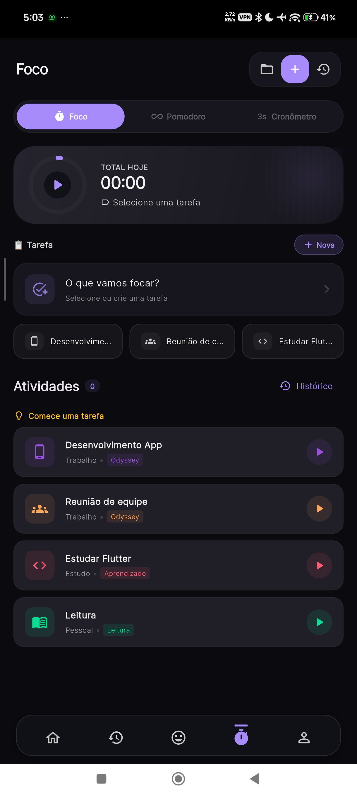
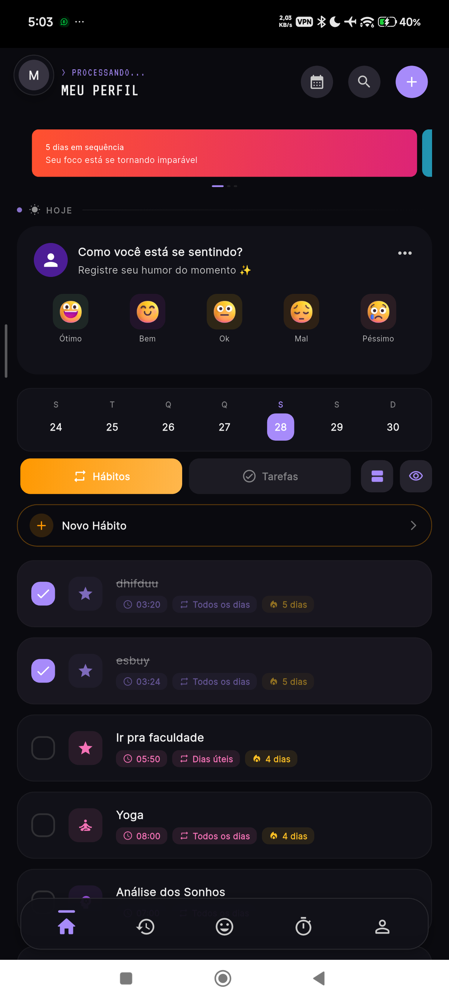

ODYSSEY O cotidiano também
é uma jornada.
é uma jornada.


DE CADA VEZ ↗
Odyssey
Cuidar da rotina. Entender o próprio ritmo.
Humor, hábitos, diário e foco em um app de bem-estar e produtividade. A proposta é tornar pequenas ações do cotidiano parte de uma jornada, com experiência, níveis e conquistas.
Por dentro do projeto +
O desafio
Reunir registros pessoais e ferramentas de rotina numa experiência coerente, incluindo o uso sem conexão.
As decisões
Flutter na interface, Riverpod no estado, Hive para dados locais e Supabase na nuvem. A organização por funcionalidades separa interface, modelos e persistência.
O aprendizado em prática
O trabalho recente inclui uma fila offline para registros de humor e testes de modelo e formulário. A evolução continua com estabilização, sincronização e revisão visual.